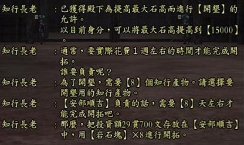

知行指令
※本頁知行指令部分資料，感謝GF3霸王傳 淺井家「鋼之介」提供，非常感謝您呀～^^*
知行指令可適用在町、城內，各指令的意義如下：
一、營運
＜知行開發＞
開墾 |
給予村役命令可以使石高上升。給予村役資金可以實行 讓目前知行石高上升的指令 。如果已經到達最大 石 高的上限則不能在執行開墾的指令了。如果發生災害事件或其他等等，則會根據所發生的事件產生的影響而有所增減。 「 石高 」 如果上升，知行收入的獲得與人口也會增加。 「腕力」高的村役執行「開墾」的效果也比較大 ，請作為給予村役工作時的任命基礎。
(2006.03.29改版修正：減少知行【開墾】投資額消費金錢的速度。) |
商業 |
給予村役命令可以使商業度上升。給予村役資金可以實行 讓知行商業度上升的指令 。 「 商業度 」 如果升高，知行收入的獲得也會增加。 如果「靈巧」較高的村役來執行「商業」的工作會更有效率 。
(2006.03.29改版修正：減少知行【商業】投資額消費金錢的速度。) |
佈施 |
給予村役命令可以使人民的忠誠度上升。給予村役資金可以實行 讓知行人民忠誠度上升的指令 ，上限是忠誠度 100 。 「人民忠誠度」的數值高的時候 ，除了收入獲得會較高以外，知行的營運也會變得安定。 執行「施與」指令的時候 ，選擇有 「 魅力 」 的村役執行的 效率會更好 。 |
治水 |
給予村役命令可以使治水度上升。給予村役資金可以實行 讓知行治水度上升的指令 ，上限值是 100 。 為了預防不知何時會發生的天災 ，保持高的 「治水度」是很重要的 。 執行「治水」指令的時候 ，選擇 「耐久」較高 的村役來執行較為合適。 |
建造 |
除了工房以外 ， 可以建設的設施依照所選知行的種類而有所不同 。可以實行建造的村役，需要在相對應的適性上有 ☆ 或是 ★ 的能力 。 建造所需要的時間大約現實生活一個星期左右 ，不過，村役的能力或其他的因素也有可能使建造時間有所變動。 可以建造的設施數目等於知行的等級 。 在知行中建造設施的指令 ，給予村役資金即可實行，但是也有可能村役符合建造的能力需求，可是卻不能執行建設指令。
※建造可能設施數 = 知行 Lv |
改良 |
使建造完畢的設施開發度上升的指令 。給予村役資金的同時，要在知行藏內儲存改良時所需要的知行產物，才可以實行指令。但是有時村役的的適性 、知行的等級等等 ， 也可能發生改良指令不能實行的狀況 。 在累積一定以上的開發度後設施的等級也會上升 。 等級提升之後 ，可以獲得新的知行產物還有設施的效果也會上升。 知行等級 2 以上 ，可以實行設施的改良。 Lv2 的設施要實行改良的時候，村役的該項能力有 ★ 是必要的條件 。開發度到達 100% 的設施在等級上升後開發度會回到 0% ， 有時也可能會發生 村役能力是 ☆ ，可是卻能執行改良的指令 。
|
廢止 |
使建造完畢的設施消失的指令。給予村役資金之後需要花費現實生活 3 天的時間。 廢止的工作也與建造相同 ，要指派對於想要廢止之設施的適性高的村役。
給予村役資金後，實際時間約 3 天 ，設施欄位內將會變成空白狀態。 |
• 2006.03.29改版修正：
知行指定村役工作，所需工作天數將會顯示

＜知行物資＞
加工 |
根據工房來加工 。依據 工 房等級不同可加工的物品也不同。 分成「產物」（為了新的加工時使用） ， 以及「名物」（生產時使用的材料）這兩類 。 知行藏裡儲存知行產物然後可以執行加工的指令 。 設施中沒有建造工房或是加工時所需的材料沒有存在知行藏裡面 ，則不能執行加工的指令。執行加工後經過一定的時間， 「 產物 」 的加工會直接存放在知行藏內， 「名物」的加工則會直接放在玩者身上的袋子 。不過如果保管的空間容量不足的時候則加工會自行停止。
※加工物依工房 Lv 不同而有所改變， 村役靈巧及工房適性影響加工品數量。 |
調達
( 籌措 ) |
去購買知行產物的指令 。可選擇合適的村役給予資金以及想要的設施去執行。 選擇指定的設施 ，該設施可以收獲的產物都可能可以調度到，只是並非一定成功。可指定設施，不過不能指定想要調度的物品。為了避免調度失敗，投入充分的資金比較保險。 |
戰支度 |
在合戰場中兵種選擇時所需準備之物品的指令 。給予村役資金之後需要實際生活一個星期左右的時間來準備物品，不過也會因村役能力或其他條件等等而有所變動。 準備好的物品會直接存放在玩者的袋子中 ，玩者的袋子若是空間不足以存放時則會無法取得，請玩者要預先整理袋子好有足夠的空間存放物品。 |
資金 |
為了知行的營運所將資金儲存為知行錢的指令 。 設定金額從所持金儲存為知行錢 。知行錢的存取是用玩者身上所持有的金錢來進行。知行錢與玩者身上持有的金錢還有倉庫的金錢，是完全獨立的，從玩者身上的所持金無法直接支付村役的薪水。 知行歸還後或是出奔的時候 ，儲存在知行的知行錢會還元成玩者身上的所持金。知行錢的 上限為 99 萬 999 貫 99 文。 |
收穫指定 |
Lv2 以上的收獲設施，可指定收獲產物。 |
＜知行人事＞
錄用 |
雇用在知行內工作的村役之指令。合計最大人數只可雇用 5 名村役。 |
解雇 |
將目前任用中的村役辭退的指令。被辭退的村役有從事工作的狀況下，其投資的金額會直接歸還於知行錢。
※解雇對其他村役有壞的影響 ，忠誠度下降。 |
＜知行情報＞
村役 |
可查看目前任事狀況，雇用的村役資料。
|
設施 |
可查看目前在知行中建造的設施情報。 |
解說 |
知行長老解說知行內各項功能。 |
2006.03.29改版變更知行村役情報顯示：於村役名字按下『 TAB 』鍵將顯示村役的各項素質
【知行村役能力素質變更對照一覽表】
改版前 |
2006.03.29 改版後 |
☆ |
1~2 |
★ |
3~5 |
★☆ |
6~8 |
★★ |
9~11 |
★★☆ |
12~14 |
★★★ |
15~ |
二、 出納
讓屬於知行產物的物品在知行藏之間的物品能夠進出。
☆知行特殊
開拓 |
特殊事件發生後 ， 可以 命令村役讓最大石高上升 。開拓執行的期間約需要一週的時間，也需要 10 個知行產物 、 資金也需要。使用不同的產物來執行開拓會有不同的效果。如果在 「開拓」執行終了前終止的話 ，投資的知行錢與產物也會回到知行藏裡面。提高國力、軍資金、合戰的功績在 200 名以內的話實行可能。 |
☆各設施效果
水田 |
收穫產物 |
農田 |
收穫產物 |
林地 |
收穫產物 |
牧場 |
收穫產物 |
礦山 |
收穫產物 |
漁場 |
收穫產物 |
工房 |
產物加工 |
村 |
人口增加、開墾效果上昇 |
市 |
加工、調達、戰支度效果上昇，商業效果上昇，調達時間縮短 |
櫓 |
維持知行的治安以及人民忠誠度向上的設施。「?」的等級高時 ，執行 「施與」與「備戰度」的指令時會得到較高的成果。 |
堤防 |
可以守護知行預防自然災害的設施 ，要讓知行安定的發展下去就建築 「 堤防 」 來預防災害吧！ 「堤防」的等級高的時候 ，執行 「治水」與「改良」的指令時會得到較高的成果。 |
☆ 村役 能力
各設施適性影響改良時的開發度，工房適性影響加工效果
腕力 |
影響開墾效果 |
耐久 |
影響治水效果 |
靈巧 |
影響商業、加工效果 |
知力 |
影響開墾、商業效果 |
魅力 |
影響 施與 效果 |
☆村役能力分級
級別 |
1 |
2 |
3 |
4 |
5 |
6 |
7 |
相關
指令 |
腕力 |
能力不夠 |
不太有 |
普通 |
還算有力 |
力量自豪 |
怪力持有者 |
無與倫比 |
開墾 |
耐久 |
貧弱 |
不結實 |
平凡 |
相當結實 |
展現體力 |
頑強有名 |
不知道累的怪物 |
治水 |
靈巧 |
不在行精細的工作 |
不太靈巧 |
馬馬虎虎 |
還算靈巧 |
出眾的靈巧 |
名匠的能力 |
神一般的技巧 |
商業、加工 |
知力 |
不合邏輯 |
記憶壞 |
標準的 |
富有機智 |
頭腦清晰 |
足智多謀 |
絕世策略師 |
開墾、商業 |
魅力 |
沒水準 |
不突出 |
一般 |
深受矚目 |
街裡的人氣者 |
聲望高 |
一國之主的風範 |
施與 |
☆各地形於各知行 Lv 可建造設施
地形 |
知行 Lv1 |
知行 Lv2 |
知行 Lv3 |
知行 Lv4 |
知行 Lv5 |
平野 |
工房、水田 |
村 |
市、漁場 |
櫓 |
堤防、礦山 |
街道 |
工房、 農田 |
村 |
市、水田 |
櫓 |
堤防、漁場 |
森林 |
工房、林地 |
村 |
市、 農田 |
櫓 |
堤防、水田 |
丘陵 |
工房、牧場 |
村 |
市、林地 |
櫓 |
堤防、 農田 |
山地 |
工房、礦山 |
村 |
市、牧場 |
櫓 |
堤防、林地 |
水邊 |
工房、漁場 |
村 |
市、礦山 |
櫓 |
堤防、牧場 |
※修正村役能力說明名詞，感謝 GF1群雄傳「小光」 、
GF5將星錄「XXXXX」、 GF1群雄傳「闇月天工」、 GF3霸王傳「神陰白 」、 GF1群雄傳「謎團 」、 GF4天翔記「緋雨月朧」 、
GF6列風傳「真 小年糕」、GF1群雄傳「瀧澤太子」熱心提供^^"
|